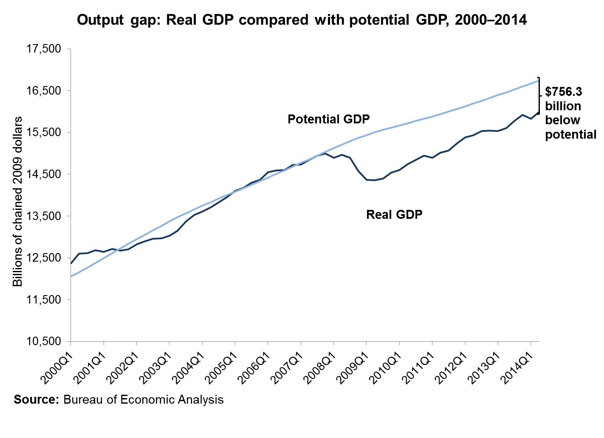
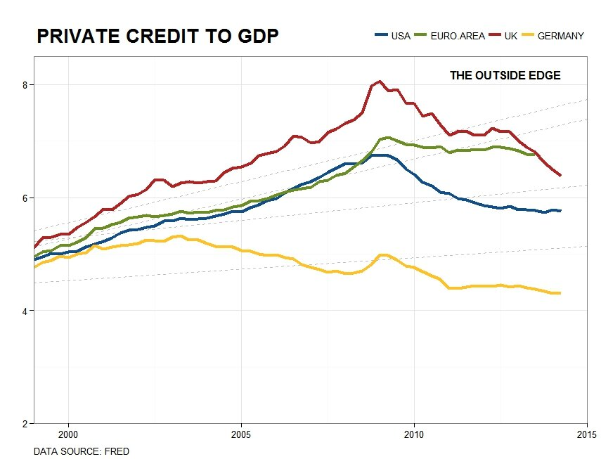

US indicators out this week, like the Chicago PMI and the CPI estimates, support both sides of a US turn-around, the output side and the consumption side. Yet still the FED, though widely expected to raise rates in the summer, remains tight-lipped about it, downplaying positive economic indicators. This sounds like policy speak for 'we want to keep the option in our pocket,' and there is good reason.
While the UK and the US have been running the money tap seemingly forever, at least since 1929 part-two, the great depression strikes back, the rest of the known world, and the unknown world, is starting to catch up. The euro area and Japan are the prime late-comers to the easy money party, but actually, of some 72 policy move making economies, followed by Central Bank News, 48 lowered rates during the last year.
*Everybody wants to crash their currency and tweak their current account to surplus by pushing the demand side with exports.*
Yet, as Martin Wolf pointed out in his Feb 17th Financial Times article, "...income and spending has to add up across the world economy." Somebody will have to widen their trade and current account deficits to fund those surpluses. That somebody is the US and that is one reason Janet Yellen may want to keep her options open.
The other reason is that foreigners holding US debt demand payments in US dollars. You see, any hike in interest rates signals conditions that will eventually attract capital inflows and raise the trade weighted U.S. dollar against a basket of major currencies. That will push up the relative cost of U.S. debt service and drive the U.S. to issue more and more debt. Can somebody say debt ceiling?
A higher U.S. dollar will also widen the trade deficit, push down prices with cheaper imports, and import asset price inflation. Markets, already inflated, could get even more inflated, contributing not only to higher volatility but even, yes we dare to say it, more asset bubbles. At the same time, that eventual rate hike is going to flush out market participants who see the end to easy money as the start to musical chairs. In other words, a rate hike could both crash the market, and, following that, over inflate it--seriously!
Head-line inflation, or rather the absence of it, is the great excuse. The fall off in prices, that continued with today's CPI reports, along with what could be interpreted as lukewarm purchasing manager indices, are evidence enough to keep interest rates low. That could be a big mistake. Strip oil and food from price indices and core inflation is actually positive.
*The thing about business cycles is that no one ever knows how far they are from their tracks.*
While rate changes have immediate effects on more liquid asset markets, like foreign exchange and equities, the fundamental effect on output appears mysteriously sometime in the near to far future. In other words, America could be much farther along in the business cycle than it appears. The output gap, excessively negative since 2008, could be more positive than estimates suggest. Core inflation, on the rise, could be much much more so in a years time.
And there is substantial evidence that the long awaited turn-around is here. Not only are employment levels improving, but consumption is on the rise. And even if GDP is revised downward to 2% on Friday, there is ample evidence that the gap between spending and potential spending gets narrower and narrower (just like the gap between output and potential output incidentally).
Take for example private debt to GDP. Sure, the public sector the world over is leveraged, often more and more, but private sector debt relative to GDP has been falling everywhere, and nowhere faster than in the US. Private credit to GDP in the UK, Germany, the US and even the Euro Area, are under the long-run trend. The US however, is the only one of those regions where the annual growth rate of private credit relative the annual growth rate of GDP is consistently less than 1 since 2008. If slack in the economy is over-estimated and the FED doesn't raise rates, the private sector could very well excessively and quickly re-lever. There is plenty more room for blowing bubbles.
 Graphic Author: Yuri TricysAnd then there is all of that American money supply. Huge sustained and continued efforts at quantitative easing have led to massive increases in American money supply the world over, but not inflation. Why is that? It's because inflation is waiting to happen! All that money has been sitting in equities for years, slowly working its way around, to...hmm...somewhere.
So the FED has problems, raise rates and suffer prolonged current account deficits, and real spikes in expenditure on service of foreign held debt, or leave rates untouched and miss hitting the critical note at the critical time. Americans, on the other hand, well...today's Americans anyway, are coming up on better times, and the world at large can hardly wait.
comments powered by Disqus